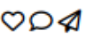

html5
Rigoberto
Rigoberto


Le ha gustado a Juan, Paco y 122 más
¡Te voy a dar un dato!¿Sabias que en castellano, decir "aré
lo que pude" es gramaticalmente correcto? Aunque todo
nos hace pensar que en el paisano se está haciendo un lio con
el pasado y el futuro, no hemos caido en la cuenta de que es
un humilde trabajador del campo ¡Y NO POR ESO HABLE
PEOR! que ya te veo pecando de lasista. Nuestro
compañero ha movido mucha tierra ese día, asñi que
efectivamente ha arado lo que ha podido (Esto contando
tiene más gancho que escrito, porque claro, el hecho de no
poner la letra "h nos delata")